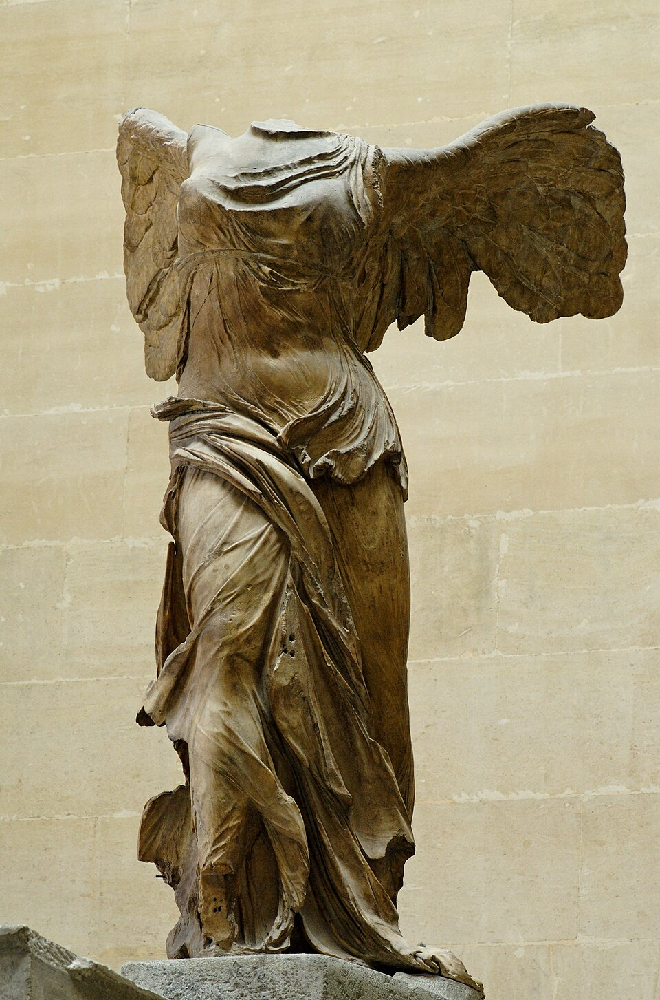

Marble
Marble (Marmor) is a noble stone in many colors, prized for its speckles and varied markings. Its kinds come from quarries, cliffs, and underground deposits, and they take names from their colors, places, or patrons. ¹ ² ³ Among them, Parian Marble is exceptionally white, comes from the island of Paros, and preserves spices and ointments. ¹ ²
Generic
Description
Marble is a broad class of noble stones, distinguished by varied colors and markings rather than by a single appearance. Not every kind is quarried from rock: some are said to lie underground, while others come from cliffs and quarries. The name is connected in different accounts with greenness and with Greek words for marble, gleaming, or sparkling. ¹ ² ³
Appearance
The traditional kinds range from green, black, and iron-colored to white, red, gray, ivory-like, and variegated. Their surfaces may be mottled with gold, white, or other colors, marked with curling or serpentine patterns, or crossed by veins. ¹ ² ³
Found in
The kinds are spread across many lands. Some are quarried from cliffs and rocks; others are said to form underground. Their specific origins are listed with the varieties below. ¹ ² ³
Uses
Marble is hard, solid, strong, and fair. It is used for columns, pillars, lintels, beams, pavements, towers, walls, and vessels. Its hardness makes it difficult to engrave and polish. One account says it is cut and split with a plate of lead set between soft pieces of wood, rather than with iron or steel. Its coldness and solidity also make it suitable for keeping spices and ointments. ² ³
Varieties
| Variety | Appearance, place, and use |
|---|---|
| Lacedemonian marble | Green and counted among the most prized kinds; from Lacedemonia. ¹ ² ³ |
| Augustean marble | Found in Egypt, with spots clustered together. ¹ ³ |
| Tiberian marble | Found in Egypt; gray and spotty, with markings that do not curl into whorls. ¹ |
| Ophite marble | Marked like a serpent; one kind is soft and white, another hard and black or dark greenish with yellow spots. See Ophites for its separate account. ¹ ² ³ |
| Purpurite or porphyry | Red, with scattered white spots or round marks; found in Egypt. See also Porphyry. ¹ ² ³ |
| Basanite or Basamite | Iron-colored and hard; found in Egypt and Ethiopia. ¹ ³ |
| Alabaster | A white marble kind; see Alabaster for its appearance and virtues. ² ³ |
| Parian Marble | Also called Parian Stone, Parius, Pario, and Lygdinus; exceptionally white, from the island of Paros, small enough for plates and wine bowls, and suited to unguents. ¹ ² ³ |
| Coralliticus | Found in Asia; no more than two cubits long, ivory-white with dark speckles. ¹ ² |
| Thebaic marble | White with golden spots or drops; from the Egyptian region of Thebes. Small mortars are made from it for grinding eye-salves. ¹ ² ³ |
| Syenite | From Syene or Thebes; kings make building beams from it. ¹ ³ |
| Thasian marble | Spotted with many colors; associated with Thasos and first used on the Cyclades. ¹ |
| Lesbian marble | More bluish than Thasian marble and also marked with spots of varied colors. ¹ ³ |
| Corinthian marble | Varied in color; found in Corinth and used for large columns, lintels, beams, pavements, and towers. ¹ ² ³ |
| Caristian marble | Green; its color is said to refresh the sight. ¹ ² ³ |
| Numidian marble | From Numidia; gives off a saffron-colored moisture at its surface and is suited to blocks and lintels rather than inlaid panels. ¹ ² ³ |
| Lucullean marble | Named for the consul Lucullus; one account places it on Melos, another on Chios. ¹ ³ |
| Lunensis or Carrara marble | From Carrara; white with red and sometimes black spots. ¹ ³ |
| Onichiata | Found in the Arabian mountains and in Germany; alabaster-colored with small white veins. ³ |
| Eburnean marble | Ivory-like in color. ³ |
Subtype I: Parian Marble
Image

A marble sculpture of Nike of Samothrace is carved from Parian marble (source).

Description
Parian Marble, also called Parian Stone, Parius, Pario, or Lygdinus, is a small, noble and precious kind of exceptionally white marble from the island of Paros. ¹ ²
Uses
It is well suited to keep spices and ointments. A gloss also says that its whiteness signifies chastity. ¹ ²
Subtype II: Ophite Marble
Image

A dark green serpentine-marked marble specimen illustrates the Ophite form (source).

Description
Ophite marble is marked with patterns like a serpent. It occurs as soft white marble or hard black or dark greenish stone sprinkled with yellow spots. It is found in Germany and the Belgian provinces. ¹ ² ³
Properties and uses
When hung by the neck, it heals headaches and serpent bites. The white kind restores the insane and the lethargic. The ancients used Ophite marble on building walls; its softer kind can be cut and smoothed, and in the Belgian provinces it is sawn into planks for roof tiles. It hardens with fire. ³
Sources
1. St. Isidore of Seville — Etymologies, Book XVI, V: “Marble”
After the types of stones we shall come to marble. There is a difference between stone and marble; exceptional stones that are prized for their markings and colors are called ‘marble.’ Marble (marmor) is a Greek word (i.e. μάρμαρος (marmaros), and cf. μαρμαίρειν (marmairein), “gleam, sparkle”) so named from ‘greenness,’ and although the other colors were discovered later, people continued to use the original name from the idea of greenness.
The colors and kinds of marble are beyond counting. Not all are quarried from rock, but many are scattered beneath the ground, including the most precious kinds, such as green Lacedaemonian, the most delightful of all, first discovered by the Lacedaemonians; hence its name.
Ophite (ophites) has markings similar to a snake’s, whence it takes its name (cf. ὄφις (ophis, “snake”)). Two kinds occur: a soft white kind and a hard black kind.
Augustean and Tiberian marble were first found in Egypt during the reigns of Augustus and of Tiberius. They are different from ophite in that ophite, as we said above, has markings like a snake, while these have markings combined in a different way – for Augustean markings are undulating and curled into whorls, while Tiberian are of gray that is spotty and not swirled.
Porphyry (porphyrites) in Egypt is reddish with scattered white spots. The reason for its name is that it is red, like the color of shell-fish dye (purpura; cf. πορφυρέος (porphyreos, “purple”)).
Basanites has the color and hardness of iron, whence this name is given to it (cf. βάσανος (basanos, “touchstone”)). It is found in Egypt and Ethiopia.
Alabastrites is a white stone, tinted here and there with various colors. The ointment box spoken of by the Evangelist himself was made out of alabastrites (Luke 7:37), for people hollow out this stone for ointment vessels because it is said to be the best material for preserving ointments unspoiled. Particularly white alabaster originates around Thebes in Egypt and Damascus in Syria, but the highest quality comes from India.
Parian marble, also called lygdinus, is exceptionally white. It originates on the island Paros, whence it is called Parian. Its size is no larger than that of plates and wine bowls, and it is well suited for unguents.
Coralliticus is found in Asia, measuring not more than two cubits, close to ivory in its whiteness and a certain similar appearance. On the other hand, alabandicus is black, and is called by the name of its land. It is purplish in appearance. In the East this stone is melted by fire and cast to function like glass.
Thebaicus marble, spotted with golden drops, is found in a region assigned to Egypt. It is suited by a kind of natural utility to be used for small mortars for the grinding of eye-salves.
Syenites originates around Syene or Thebes. Kings made building beams from it.
There are also marbles that originate in quarries and cliffs. Among these, Thasian is distinguished by its spots of various colors; it was first used on the Cyclades islands.
Lesbian marble is slightly more bluish than Thasian, but also has spots of various colors.
Corinthian is similar to drops of ammoniac gum with a variety of different colors. It was first found in Corinth. Huge columns and lintels and beams are made from it.
Caristean marble is green, and excellent. It takes its name from its appearance, because it is soothing (gratus; perhaps cf. χάρις (charis), “grace”) to gem-carvers since its color refreshes the eye.
Numidia exports Numidian marble. At its surface it releases a moisture colored like saffron, whence it takes its name (perhaps cf. νυμφαία (nymphaia), “yellow water-lily”; νύμφη (nymphē), “water”). It is fit for use as blocks and lintels, but not for inlaid panels.
Lucullean marble comes from the island of Melos. The consul Lucullus, who was delighted with it and first brought it to Rome, provided it its name. It is almost the only marble to take its name from an admirer.
There is also a marble called Lunensis (i.e. Carrara marble).
2. Bartholomaeus Anglicanus — De proprietatibus rerum, Book XVI, Chapters 69: “Marmor” and 76: “Pario”
Open Chapter 69 · Open Chapter 76
Marble is called Marmor, and has that name of the Greeks, for greenness, as Isi. says. And he says also that marble stones be noble stones, and are praised for speckles and diverse colours: for of marble be endless many manner of kinds, but they be not all hewn out of rocks. But many manner of marble, is found in diverse manner of places under the earth: as marble of Lacedemonia that is green and precious. And marble is called Ophites, for it is speckeled like an Adder, & has therefore that name: & there is double kind, soft & white, and black and hard. And marble Purpurites comes out of Egypt, & is reddy with white points among: & has that name Purpurites, for it is red as Purple.
There is other manner kinds, as Alabastrum and Parium: thereof we shall speak innermore. Also another manner kind is called Coraliticum, and is found in Asia, and passes not two cubits in measure, and is white near as yuorye, and some black speckles, in diverse proportiens. Also another kind is called, Thebaicum, and is sprong with golden specks, and is found among Egyptians, and is kindly apt to grinde colours thereupon, and Collyria ointments that help the eyes. Other kinds of marble breeds in quarries and in rocks, as Marble that is called, Marmor Corintheum. Thereof is made great Pillars, pavements, and Towers. Also there is another manner kind, as Caristium, and is green and best: and has that name, of aspect, for men that grave love it wel, for green colour comforts the sight. Another kind is called Numidicum, & breeds in Numidia, and makes a thing that is rubbed therewith like to saffron, and has that name therefore. Lib. 16. Isidore sets ensamples of many other diverse Marbles: but these are sufficient at this time. But Marble is more hard and solid, more strong and fair, and more profitable than other stones. In veins thereof is diverse master found, and precious stones, and for hardness thereof, it is most hardly engraved & polished, and for coldness and solidiousnesse thereof, it is best to keep in spicerie, and ointments. Over all things we may wonder, that Marble stones be not hewed neither cloven with iron neither with steele, with hammer nor with sawe, as they be with a plate of lead, set between soft shingles or spones. For with lead & not with iron, Marble stones be hewn, and cloven, and plained, as shingles or small stones.
Parius stone is a kind of noble marble and precious, as Isidore says. This stone is found in the Island Paron, and is therefore called Parius. The quantity thereof, passes not Lances and Crateras, and is good to keep men's spicerie and ointments. The Gloss super Esay says, that Parius is a kind of most white marble, and betokeneth therefore chastity.
3. Camillo Leonardi — Speculum Lapidum, “Marmor” and “Ophites”
[[Texts/Camillo Leonardi - Speculum Lapidum#Marmor [Marble]|Open the Marmor passage]] · Open the Ophites passage
Marmor [Marble] is a well-known stone. There are different species that take their names from the countries in which they are found. Nonetheless the true marble that is much praised since antiquity is the green, from which it takes its name, since in both Greek and Latin marble means green. But not all species are generated in lipiciniis places and are cut out from the mountains. Some are generated under the earth, as we have mentioned many other times in this book and as we are about to say now. At present we shall list only its species and their color. Their virtues will be discussed under their own separate headings. The Lacedemonian is green, as we just said, and is the most prized of them all. After this follows the Augustan, which is found in Egypt and has spots gathered in clusters. The Ophitean is black and white with serpentine spots. The Purpurite, or porphyry from Egypt, is red colored with white spots or round lines. The Basamite is iron colored and found in Ethiopia and Egypt. The Thebaic is white girdled by golden veins or drops. The Syenite is found near the city of Syene. The Parian, which is extremely white, is generated in the island from which it takes its name. Onichiata is found in the Arabian mountains, and some believe that it was generated only there. But there is also a great quantity of it in Germany, which has almost an alabaster color with small white veins. There is the Lesbian, Corinthian, Caristean, Numidian, Lucullan, which is found in Chios, the Limensian, and the Eburnean [ivory like], so called [for it is similar to the ivory obtained] from a black elephant. The Carrara marble, so called from its place of origins, is white with red, sometimes black spots. It is also found in many places with a variety of different names, which would be superfluous to mention, since they are similar in color and beauty to those mentioned above.
Ophites is a type of marble, as said above under that heading [Marmor], which has serpentine spots. It is of two species: the soft and white, and the hard and black (or dark) with a certain greenish [tint] sprinkled with yellow spots. The ancients adorned the walls of buildings with it. When hung by the neck, it has the virtue of healing headaches and serpents’ bites. It is believed that the white kind restores to health the insane and the lethargic. It is found in Germany, where they make drinking vessels with it. Some think that ophites is that stone with which they made cauldrons. Because of its softness it may be cut and smoothed out. In the Belgian provinces they saw it into planks to make roof tiles for the homes. It hardens with fire.
4. St. Hildegard of Bingen — Physica, Stones, XXVI: “Other Stones”
Other stones (ceteri lapides) arise from a variety of earth and from various regions. From the lands in which they are born they draw into themselves diverse natures and varying colors. Among these are marble, sandstone, limestone (calckstein), tufaceous limestone, and wacke. They are not very valuable as medicine, because they possess too much moisture, which is not balanced by correct dryness, or too much dryness, which is not moistened by correct humidity.